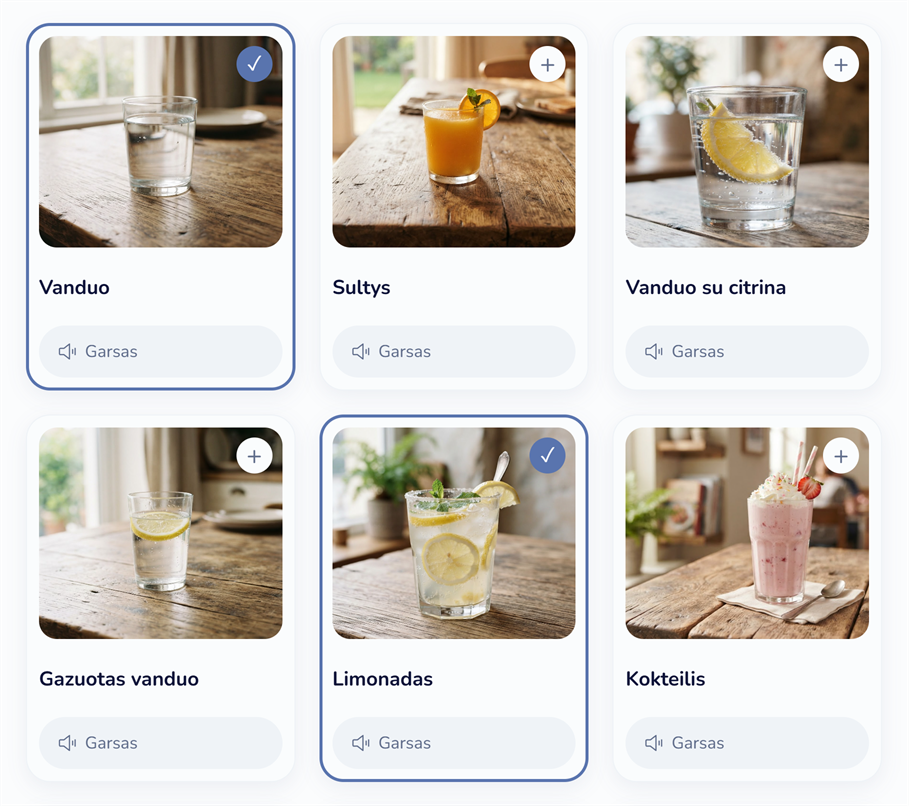

VOICER
Išreikšk save lengviau
Kalbinis redaktorius – tai tavo asmeninis pagalbininkas, kai sudėtinga išreikšti žodžius, sakinio prasmę. Padėk kitiems tave suprasti.
Veikia telefone ir kompiuteryje: didelis ekranas patogus mokykloje, per multimediją ir kai norisi matyti daugiau kortelių iš karto.
Atidaryti Voicer
Kaip tai veikia
Pasirink kortelę
Rask kategoriją arba naudok paiešką. Kiekviena kortelė turi nuotrauką ir garsą.
Sudėk sakinį
Pasirinktos kortelės sudeda sakinį. Dar kartą bakstelėjus kortelę, žodis pašalinamas.
Pasakyk arba parodyk
Paspausk garsiakalbį, kad Voicer ištartų sakinį, arba parodyk jį kitam dideliu tekstu per visą ekraną.
Ką dar gali Voicer
Savos frazės
Pridėk savo frazes, įrašyk savo balsą ir susikurk savo situacijas.
Greiti sakiniai ir dažniausios kortelės
Dažnai naudojami sakiniai ir žodžiai atsiranda pirmi, todėl jų nereikia ieškoti.
Situacijos
Paruoštos frazės parduotuvei, vizitui pas gydytoją ar kavinei.
Reikia laiko
Mandagiai paprašyk palaukti, kol surasi žodžius.
Ramus vaizdas
Ramesnės spalvos arba tik tekstas, kai norisi mažiau dirgiklių.
Savos kortelės
Pridėk savo nuotrauką ir įrašyk savo balsą ar žodį.
Telefone ir kompiuteryje
Dideliame ekrane matosi daugiau kortelių, o „Didelis vaizdas“ tinka mokykloje ar rodant per multimediją.
Įsidiegia ir veikia be interneto
Pridėk Voicer prie pagrindinio ekrano. Tavo kortelės saugomos tik tavo įrenginyje.
Greitai atsiras naujiena!
Šiuo metu kuriame žingsnis po žingsnio instrukcijas apie maisto ruošimą. Viskas tam, kad virtuvėje būtų aišku, skanu ir be jokio streso.

Nori palaikyti „Voicer“ augimą? 💙 Šis projektas kuriamas tam, kad palengvintų kasdienybę. Jei nori prisidėti prie naujų įrankių ar komiksų kūrimo, gali palaikyti mus bet kuria pasirinkta suma.